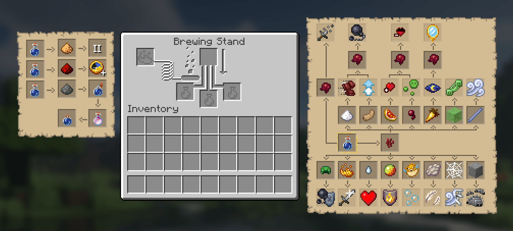

In minecraft con brewing si intende tutto quello che ha a che fare con le pozioni.
Per creare le pozioni possiamo usare degli alambicchi, anche noti come brewing stand,
invece, per duplicarle o applicarle a oggetti come frecce possiamo utilizzare dei calderoni.
Per prima cosa per creare le pozioni bisogna caricare l'alambicco con della polvere di blaze e
metterci delle bottiglie d'acqua (o pozioni da elaborare ulteriormente).
Poi bisogna mettere l'ingrediente principale della pozione e, non appena finirà il caricamento della freccia a destra, avrete la vostra pozione. Ecco qui una guida agli ingredienti da utilizzare per le pozioni con i loro effetti.
| Nome | Elemento | Base | Effetto |
| Pozione strana | Verruca del Nether | Ampolla d'acqua | Nessun Effetto |
| Debolezza | Occhio di ragno fermentato | Ampolla d'acqua | debolezza: si subisce più danno quando colpiti |
| Velocità | Zucchero | Pozione strana | velocità: aumenta la velocità |
| Salto Ampliato | Zampa di coniglio | Pozione strana | salto ampliato: aumenta di quanti blocchi puoi saltare |
| Lentezza | Occhio di ragno fermentato | Pozione di velocità o di salto ampliato | lentezza: diminuisce la velocità |
| Salute istantanea | Fetta di anguria luccicante | Pozione strana | rigenera istantaneamente salute |
| Avvelenamento | Occhio di ragno | Pozione strana | avvelenamento: fa perdere costantementa salute |
| Danno | Occhio di ragno fermentato | Pozione di salute istantanea o di avvelenamento | infligge danno |
| Visione notturna | Carota d'oro | Pozione strana | visione notturna: rende la visuale luminosa, anche al buio |
| Invisibilità | Occhio di ragno fermentato | Pozione di visione notturna | invisibilità: rende invisibili, non si viene attaccati da mob e non si è visibili ad altri giocatori |
| Oozing | Blocco di slime | Pozione strana | oozing: genera slime alla morte |
| Wind charging | Verga di breeze | Pozione strana | wind charging: genera l'effetto di una carica di vento che sbalza in aria tutte le entità vicine alla morte |
| Maestro tartaruga | Elmetto di tartaruga | Pozione strana | Maestro tartaruga: rallenta i movimenti ma aumenta la resistenza al danno |
| Forza | Polvere di blaze | Pozione strana | forza: aumenta il danno inflitto da chi ha l'effetto |
| Rigenerazione | Lacrima di ghast | Pozione strana | rigenerazione: si rigenera salute più velocemente del normale |
| Resistenza al fuoco | Crema di magma | Pozione strana | resistenza al fuoco: rende immuni al danno da fuoco |
| Respirazione acquatica | Pesce palla | Pozione strana | respirazione acquatica: rende immuni al danno da mancanza di ossigeno sott'acqua |
| Caduta lenta | Membrana fantasma | Pozione strana | caduta lenta: rallenta la caduta rendendo immuni dal danno da caduta |
| Tessitura | Zucchero | Pozione strana | tessitura: genera ragnatele alla morte e rende più facile camminare attraverso le ragnatele |
| Infestazione | Zucchero | Pozione strana | infestazione: ha una possibilità di generare silverfish alla morte |
| {pozione} da lancio | Polvere da sparo | {pozione} | {effetto pozione} applicabile lanciandola ad area |
| {pozione} persistente | Soffio di drago | {pozione} da lancio | {effetto pozione} che resta per alcuni istanti sul terreno |
| {pozione} II | Polvere di luminite | {pozione} | {effetto pozione} amplificato |
| {pozione} + | Polvere di redstone | {pozione} | {effetto pozione} con durata aumentata |